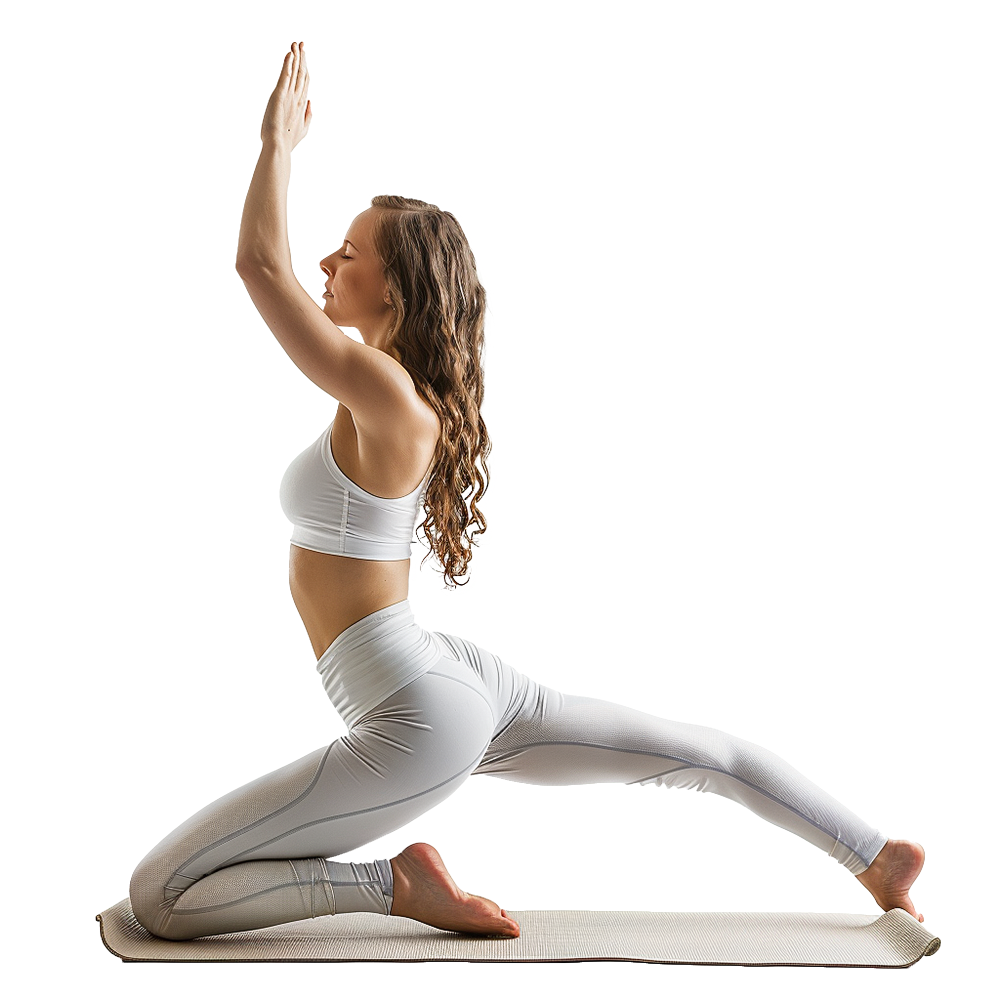
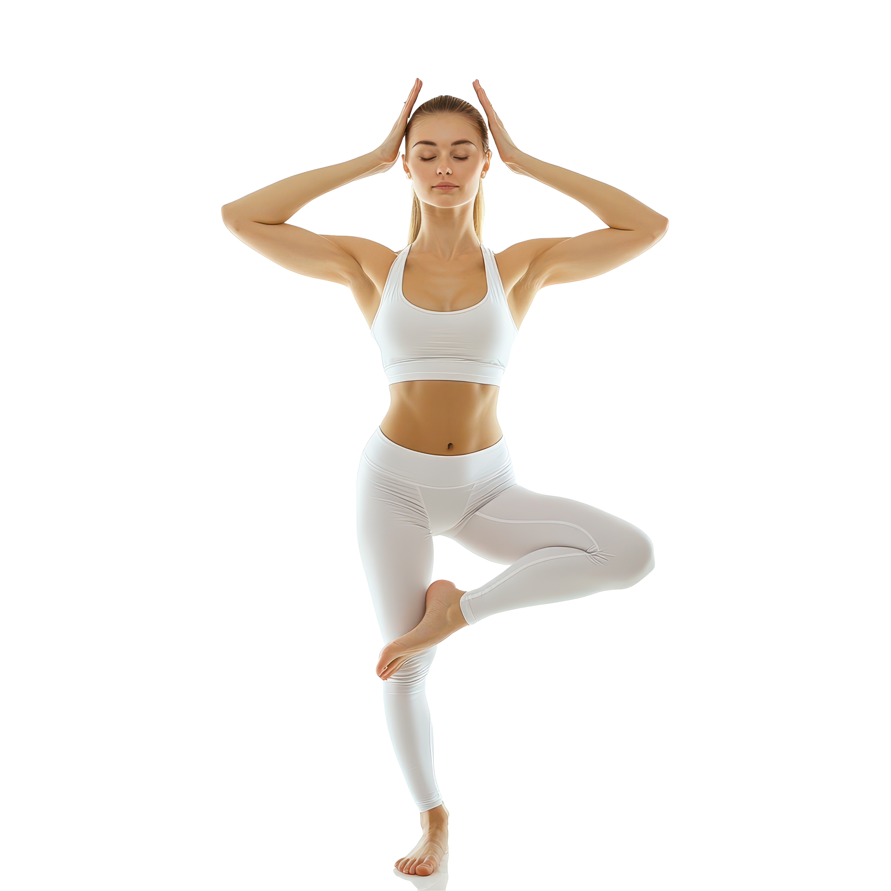
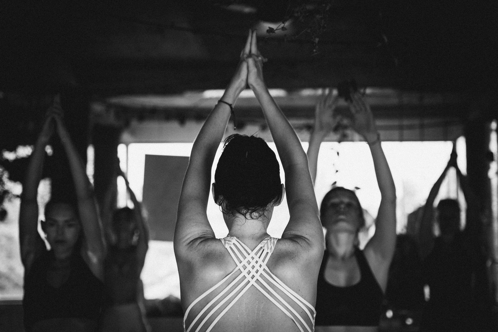
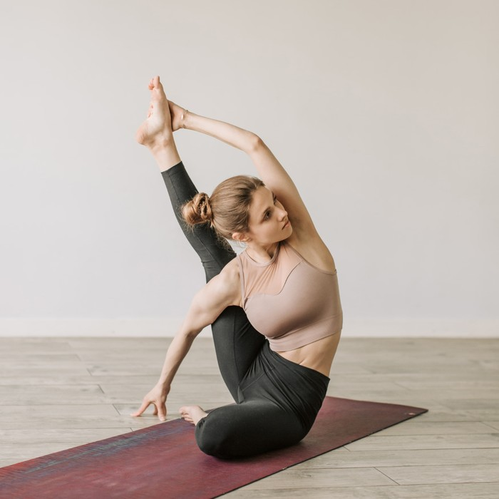
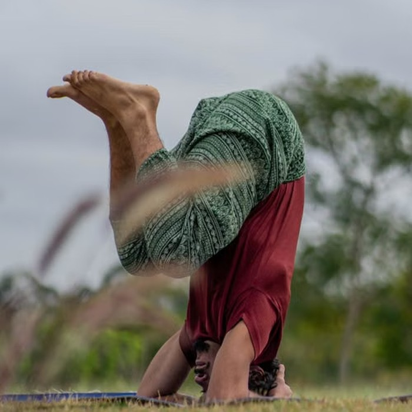

Fedezd fel, mire képes a tested és az elméd egy támogató, inspiráló környezetben. Minden gyakorlás egy újabb lépés az erősebb, rugalmasabb és kiegyensúlyozottabb mindennapok felé.

Az első lépés gyakran a legnehezebb, mégis ez indít el egy kiegyensúlyozottabb, tudatosabb és egészségesebb élet felé. Akár most ismerkedsz a jógával, akár régóta gyakorlod, óráink segítenek abban, hogy a saját tempódban haladj és megtaláld azt a mozgásformát, amely igazán hozzád illik.
Tapasztalt oktatóink, változatos óráink és támogató környezetünk minden segítséget megadnak ahhoz, hogy motivált maradj, fejlődj, és a jóga fokozatosan a mindennapjaid természetes részévé váljon.
Segít ellazítani a fáradt izmokat, oldani a felgyülemlett feszültséget és csökkenteni a stresszt, hogy testileg és lelkileg is felfrissülve távozhass.
A kellemes meleg támogatja a testi-lelki kikapcsolódást, segít ellazulni, feltöltődni és egy kis nyugalmat csempészni a rohanó hétköznapokba.
Jól felszerelt edzőtermünk teret ad az önálló erősítésnek és állóképességi edzésnek, így a jóga mellett változatosan fejlesztheted erőnlétedet.
Tematikus workshopjainkon lehetőséged nyílik elmélyíteni a tudásodat, új technikákat elsajátítani és a jóga különböző területeit közelebbről is megismerni.

Az alapvető pózok és légzéstechnikák nyugodt, könnyen követhető elsajátítására épül. Ideális, ha most ismerkedsz a jógával.
Lassabb tempójú, kitartott pózokra és tudatos légzésre épülő óra. Egyszerre erősít, nyújt és segít lecsendesedni.
Kíméletes gyakorlatokkal támogatja a törzs izmainak erősítését és a gerinc mobilitását. Segít a tudatosabb, kiegyensúlyozottabb testtartás kialakításában.
Lassú, célzott gyakorlatok segítenek oldani az izmok feszültségét és növelni a mozgástartományt. Ideális, ha könnyedebb, szabadabb mozgásra vágysz.
Dinamikus, folyamatos gyakorlás, ahol a mozdulatok a légzés ritmusára kapcsolódnak egymásba. Lendületes, energizáló gyakorlás azoknak, akik szeretik a folyamatos mozgást.
Lassú, meditatív óra hosszabban kitartott pózokkal. Teret ad a mélyebb nyújtásnak, a befelé figyelésnek és az ellazulásnak.
Gyengéd mozgás, tudatos légzés és vezetett ellazulás segít kiengedni a nap feszültségét. Tökéletes választás, ha nyugalomra és feltöltődésre vágysz.

A jóga számunkra többet jelent egyszerű mozgásnál. Lehetőséget ad arra, hogy jobban megismerd önmagad, tudatosabban figyelj a testedre, és megtaláld azt az egyensúlyt, amelyre a mindennapok során is támaszkodhatsz. Minden gyakorlás egy újabb lépés afelé, hogy erősebbé, rugalmasabbá és kiegyensúlyozottabbá válj.
Nem a gyors eredményekről vagy a tökéletesen kivitelezett pózokról szól. Sokkal inkább egy folyamatról, amelyben megtanulsz türelmesebben bánni önmagaddal, felismerni a saját határaidat, és fokozatosan túllépni rajtuk.
Hogy hová jutsz el, az mindenkinél más. Mi abban segítünk, hogy megtaláld a saját utadat, a saját tempódat, és egy olyan gyakorlást alakíts ki, amely nemcsak a testedet erősíti, hanem a mindennapjaidra is pozitív hatással van.
Hatha jógaoktató

Vinyasa jógaoktató

Gerincjóga-oktató